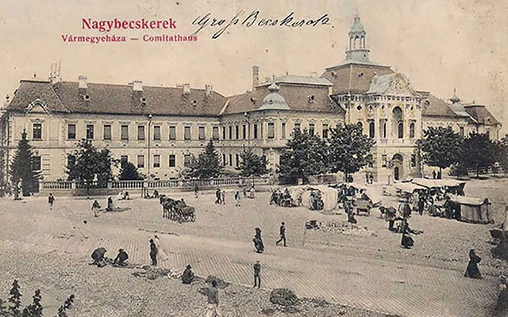
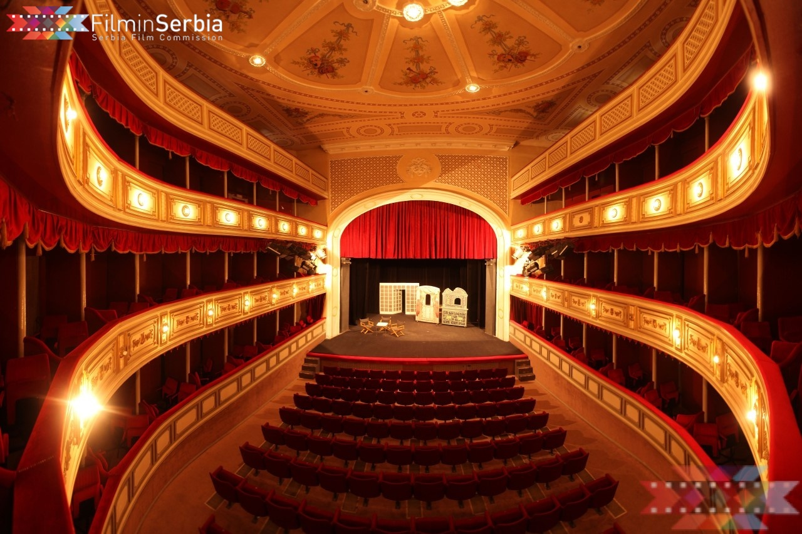

Smatra se da je na mestu gradskog centra u ranom srednjem veku bio avarsko-slovenski ring. Grad se prvi put spominje 1326. godine kao selo Bečkerek, podignuto na tri ostrva reke Begej
Počevši od 1935. godine, grad se naziva Petrovgrad (konjanička statua kralja Petra otkrivena je 1926.), a od 1946. godine Zrenjanin

Sve do njihovog nasilnog iseljavanja neposredno nakon Drugog svetskog rata, ovaj grad je bio kulturno središte Švaba u Vojvodini i celoj Jugoslaviji. Ipak, i danas Zrenjanin igra važnu ulogu u kulturnom životu Srbije.
U gradu i okolini nalazi se dosta kulturno-istorijskih spomenika i poznatih institucija: Narodni muzej, istorijski arhiv, Gradska narodna biblioteka „Žarko Zrenjanin”, Umetnička kolonija Ečka s galerijom, Kulturni centar, amatersko pozorište „Madač” na mađarskom jeziku, kao i Narodno pozorište „Toša Jovanović”, koje je prema popularnoj legendi nastalo tako što je u vreme Austrougarske jedan imućan Bečkerečanin preuredio žitni magacin u pozorište kako bi doveo jednu glumicu iz Pešte, u koju se zaljubio, u svoj grad. Danas Narodno pozorište ima najrazvijeniju lutkarsku scenu u Srbiji.
